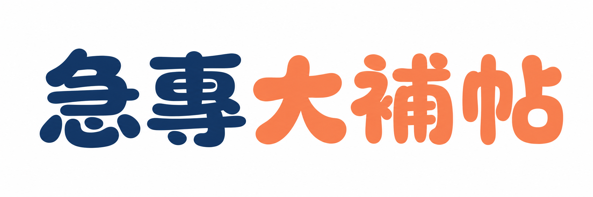

急診專科 · 國考準備

把 22 年題庫整理成你看得懂的版本
by
v2
2026
資料規模
22 年題庫，每題都附四段式詳解
2,913
題
完整考古題
22
年
94 - 115 年覆蓋
100
%
解析欄位齊全
六大功能
不只是刷題
分類刷題
依 L1 / L2 主題練習，顯示完成率
間隔複習
SM-2 演算法自動排程複習
錯題本
標記重點題目，集中複習
模擬考
限時 100 分鐘，隨機 / 年份 / 科目
藥物快查
A-Z 索引，找到相關題目
學習儀表板
圖表分析正確率、學習趨勢
解析示範
每題四段式
臨床推理
情境分析 · 正確選項 ·
錯誤選項 · 臨床重點
115 年
心臟血管
第 47 題
65 歲男性突發胸痛 30 分鐘，ECG 顯示 II、III、aVF 導程 ST 段抬高，最可能的犯罪血管為何？
A
左前降支
B
左迴旋支
C
右冠狀動脈
✓
D
左主幹
臨床重點 ·
下壁 STEMI（II/III/aVF）約 80% 來自右冠狀動脈閉塞，常合併右心室梗塞，禁用 nitrate。
準備好了嗎
立即
開始刷題
er-quiz-app-v2.vercel.app
→
agoodbear
/
er-quiz-app-v2
·
open source on GitHub